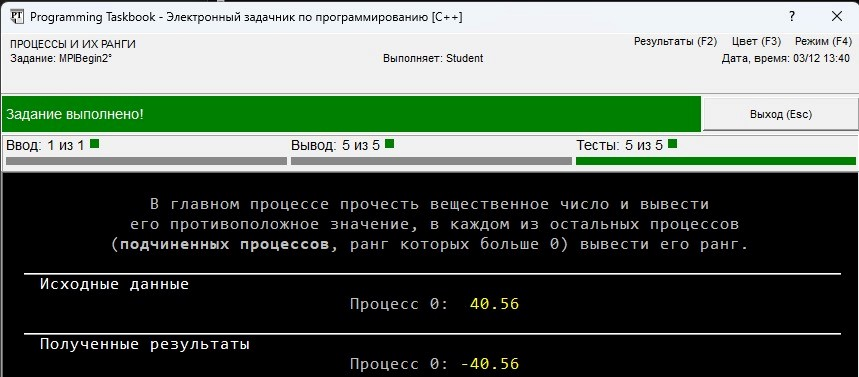
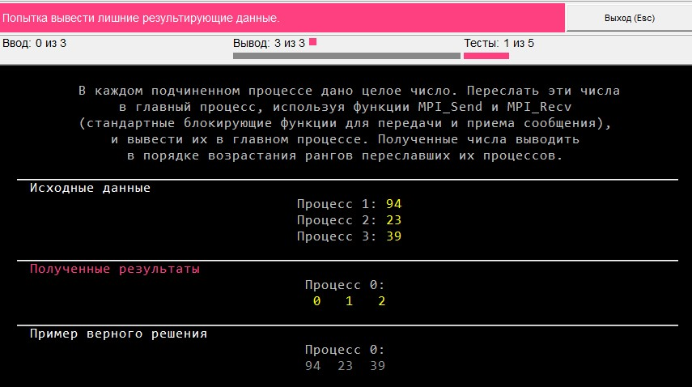
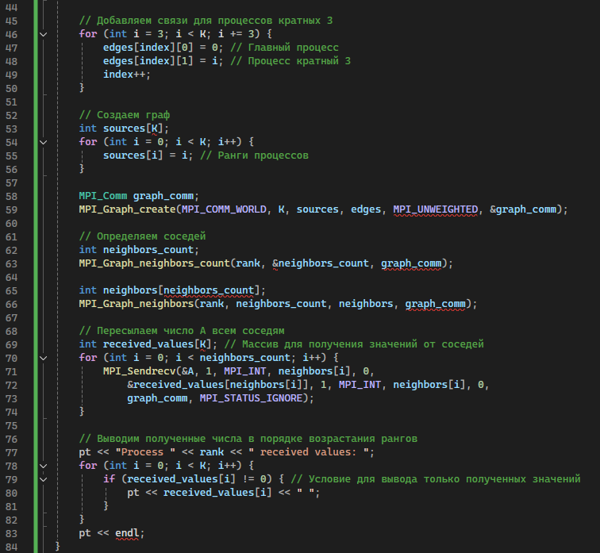

№ 1 Модуль-параллель бағдарламаларды әзірлеу және орындау процесін сипаттауға арналған
Берілгені
MPIBegin1. Коммуникаторға енгізілген процестердің әрқайсысында MPI _COMM_WORLD, бір бүтін санды оқып, оның екі еселенген санын шығарыңыз мағынасы. Сонымен қатар, негізгі процесс үшін (0 дәрежелі процесс) басып шығарыңыз MPI коммуникаторына енгізілген процестердің саны MPI_COMM_WORLD.
MPIBegin1. В каждом из процессов, входящих в коммуникатор
MPI
_COMM_WORLD, прочесть одно целое число и вывести его удвоенное
значение. Кроме того, для главного процесса (процесса ранга 0) вывести ко-
личество процессов, входящих в коммуникатор MPI
_COMM_WORLD.
Нәтижесі
№ 2 Модуль-екі процесс арасында хабарламаларды жіберу
Берілгені
MPIBegin17. Әр процесте нақты Сан беріледі. Жіберу
негізгі процестен барлық бағынышты процестерге дейінгі сан, ал барлық сандар
бағынышты процестер-негізгі және әр процесте жынысты шығару-
жұп сандар (негізгі процесте сандар өсу ретімен шығарылады
оларды жіберген процестердің дәрежелері)
MPIBegin17. В каждом процессе дано вещественное число. Переслать
число из главного процесса во все подчиненные процессы, а все числа из
подчиненных процессов — в главный, и вывести в каждом процессе полученные числа (в главном процессе числа выводить в порядке возрастания
рангов переславших их процессов).
Нәтижесі
№ 3 модуль редукция операциялары және параллель бағдарламаларда құрама деректер түрлерін қолдану ерекшеліктері қарастырылады
Берілгені
MPIBegin52. Әрбір процеске K + 5 сандар жиыны беріледі, мұндағы K - процестер саны. Операция үшін MPI_Allreduce функциясын пайдалану
MPI_MINLOC, реттік нөмірі мен процесс дәрежесі бірдей жиындардың деректер элементтері арасындағы ең аз мәнді табыңыз.
ең төменгі мән. Негізгі процесте минимумдарды, ал басқа процестерде осы минимумдарды қамтитын процестердің қатарларын басып шығарыңыз.
MPIBegin52. В каждом процессе дан набор из K + 5 чисел, где K — количество процессов. Используя функцию MPI_Allreduce для операции
MPI_MINLOC, найти минимальное значение среди элементов данных наборов с одним и тем же порядковым номером и ранг процесса, содержащего
минимальное значение. Вывести в главном процессе минимумы, а в остальных процессах — ранги процессов, содержащих эти минимумы.
Нәтижесі
№ 4 Модуль-ұжымдық операцияларға және жаңа коммуникаторларды құру тәсілдеріне арналған
Берілгені
MPIBegin73. Дәрежесі 3-ке бөлінген әрбір процесте (соның ішінде
негізгі процесс), үш бүтін сан берілген. Функцияны қолдану
Mpi_comm_split процестерді, дәрежені қамтитын жаңа коммуникатор жасаңыз
3 - ке бөлінеді. Бір ұжымдық жіберу операциясын қолдану
құрылған коммуникаторға арналған деректер, бастапқы сандарды негізгі нөмірге жіберіңіз
процесс және оларды жіберген дәрежелердің өсу ретімен осы сандарды шығарыңыз
процестер (негізгі процестен алынған сандарды қоса).
MPIBegin73. В каждом процессе, ранг которого делится на 3 (включая
главный процесс), даны три целых числа. С помощью функции
MPI_Comm_split создать новый коммуникатор, включающий процессы, ранг
которых делится на 3. Используя одну коллективную операцию пересылки
данных для созданного коммуникатора, переслать исходные числа в главный
процесс и вывести эти числа в порядке возрастания рангов переславших их
процессов (включая числа, полученные из главного процесса).
Нәтижесі
№ 5 Модуль-виртуалды топологиялар.
Берілгені
MPIBegin87. Процестер саны үшке еселік: K = 3N, N > 1. Процестерде 0, N және 2N N бүтін сандар бойынша беріледі. Барлық процестер үшін 3 × n өлшемді матрица түріндегі декарттық топологияны анықтаңыз, содан кейін mpi_cart_sub функциясын пайдаланып, процестер матрицасын үш бір өлшемді жолға бөліңіз
(бұл жағдайда 0, N және 2N процестері алынған негізгі процестер болады
жолдарда). Деректерді жіберудің бір ұжымдық операциясын қолдана отырып, әр жолдың негізгі процесінен бір бастапқы санды бәріне жіберіңіз
сол жолдың процестері және әр процесте алынған санды шығару
(0, N және 2N процестерін қосқанда).
MPIBegin87. Число процессов К кратно трем: K = 3N, N > 1. В процессах 0, N и 2N дано по N целых чисел. Определить для всех процессов декартову топологию в виде матрицы размера 3 × N, после чего, используя функцию MPI_Cart_sub, расщепить матрицу процессов на три одномерные строки
(при этом процессы 0, N и 2N будут главными процессами в полученных
строках). Используя одну коллективную операцию пересылки данных, переслать по одному исходному числу из главного процесса каждой строки во все
процессы этой же строки и вывести полученное число в каждом процессе
(включая процессы 0, N и 2N).
Нәтижесі
№ 6 қосымша. Оқу тапсырмаларын тұжырымдау
6.1 процестер және олардың дәрежелері
Берілгені
MPIBegin2. Негізгі процесте нақты санды оқып, оны басып шығарыңыз қарама-қарсы мән, қалған процестердің әрқайсысында (дәрежесі 0-ден жоғары бағынышты процестер) оның дәрежесін басып шығарады.
MPIBegin2. В главном процессе прочесть вещественное число и вывести его противоположное значение, в каждом из остальных процессов (подчиненных процессов, ранг которых больше 0) вывести его ранг.

Нәтижесі

6.2 жеке процестер арасында хабар алмасу
Берілгені
MPIBegin7. Әрбір тәуелді процессте бүтін сан беріледі. MPI_Send және MPI_Recv функцияларын (хабарламаларды жіберу және қабылдау үшін стандартты блоктау функциялары) пайдаланып, осы нөмірлерді негізгі процеске жіберіңіз және оларды негізгі процесте басып шығарыңыз. Алынған сандарды оларды жіберген процестердің қатарларының өсу ретімен көрсетіңіз.
MPIBegin7. В каждом подчиненном процессе дано целое число. Переслать эти числа в главный процесс, используя функции MPI_Send и MPI_Recv (стандартные блокирующие функции для передачи и приема сообщения), и вывести их в главном процессе. Полученные числа выводить в порядке возрастания рангов переславших их процессов.
Нәтижесі

MPIBegin13 Негізгі процеске N бүтін сан және N сандар жиыны беріледі; K − 1 ≤ N < 10, мұндағы K – процестер саны. Функцияны пайдалану MPI_Send 1 процестеріне берілген жиыннан бір нөмірді жіберу, 2, …, K − 2, ал қалған сандар – K − 1 процесіне енгізіліп, алынған нәтижені шығарыңыз. сандар. K - 1 процесінде қабылданған сандар санын анықтау үшін MPI_Get_count функциясын пайдаланыңыз.
MPIBegin13 В главном процессе дано целое число N и набор из N чисел; K − 1 ≤ N < 10, где K — количество процессов. С помощью функции MPI_Send переслать по одному числу их данного набора в процессы 1, 2, …, K − 2, а оставшиеся числа — в процесс K − 1, и вывести полученные числа. В процессе K − 1 для определения количества полученных чисел использовать функцию MPI_Get_count.
Нәтижесі
6.3 деректерді ұжымдық жіберу
Берілгені
MPIBegin30. Негізгі процеске бүтін сан беріледі. MPI_Bcast функциясын пайдаланып, бұл нөмірді барлық тәуелді процестерге жіберіңіз және оларда алынған нөмірді көрсетіңіз.
MPIBegin30. В главном процессе дано целое число. Используя функцию MPI_Bcast, переслать это число во все подчиненные процессы и вывести в них полученное число.
Нәтижесі
6.7 виртуалды топология
Берілгені
MPIBegin100. K процестерінің саны 3N + 1 (1 < N < 5); әрбір процеске бүтін А саны беріледі. MPI_Graph_create функциясын пайдаланып, барлық процестер үшін R, R + 1, R + 2 процестері, мұндағы R = 1, 4, 7, ... жиектері арқылы қосылған график топологиясын анықтаңыз. , және, сонымен қатар, оң дәрежелі әрбір процесс, үш еселік (3, 6, ...) негізгі процеске жиегі арқылы қосылады (нәтижесінде N-сәулелену жұлдызы, оның центрі негізгі процесс, және әрбір сәуле орталықпен байланысты үшке бөлінетін дәреже процесі бар өзара байланысты үш процесстен тұрады). Әрбір процесстен А санын барлық көршілес процестерге жіберіңіз. Көршілес процестердің санын және олардың дәрежелерін анықтау үшін MPI_Graph_neighbors_count және MPI_Graph_neighbors функцияларын пайдаланыңыз және MPI_Sendrecv функциясын пайдаланып қайта жіберуді орындаңыз. Барлық процестерде алынған сандарды оларды жіберген процестердің қатарларының өсу ретімен басып шығарыңыз.
MPIBegin100. Количество процессов K равно 3N + 1 (1 < N < 5); в каждом процессе дано целое число A. Используя функцию MPI_Graph_create, определить для всех процессов топологию графа, в которой процессы R, R + 1, R + 2, где R = 1, 4, 7, …, связаны между собой ребрами, и, кроме того, каждый процесс положительного ранга, кратного трем (3, 6, …), связан ребром с главным процессом (в результате получается N-лучевая звезда, центром которой является главный процесс, а каждый луч состоит из трех связанных между собой процессов, причем с центром связан процесс ранга, кратного трем). Переслать число A из каждого процесса всем процессам соседям. Для определения количества процессов-соседей и их рангов ис- 83 пользовать функции MPI_Graph_neighbors_count и MPI_Graph_neighbors, пересылку выполнять с помощью функции MPI_Sendrecv. Во всех процессах вывести полученные числа в порядке возрастания рангов переславших их процессов.

Нәтижесі